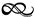
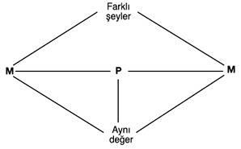
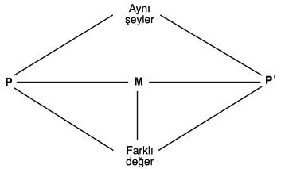
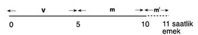
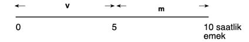
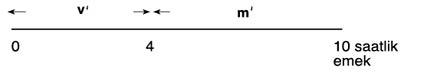

3

SERMAYE VE SÖMÜRÜ

Bundan önceki bölümde, kullanım değerlerinin meta olarak üretilmesinin kapitalizm için tipik olduğunu, bunun ise, toplumsal üretim ilişkilerinin üreticiler arasında bir ilişki olduğunu gizleme eğilimi gösterdiğini, dikkatleri, şeyler arasında bir ilişki olarak mübadele üzerinde topladığını ortaya koymuştuk. Gene de basit meta üretiminin mantıken, ticaret tarihinin de gerçeklikte gösterdiği gibi mübadelenin kendisi, kapitalizm olmadan da var olabilir; olmuştur da. Ancak emek gücü meta hâline geldiği ve ücretli işçiler, kârla satılacak metaları üretmek üzere düzenli olarak işe alındıkları zamandır ki kapitalizm, verili bir toplum için tipik olan üretim tarzı hâline gelir. Bu bölümde, mübadeleyi işçiler, daha sonra da sermayeciler açısından inceleyerek, kapitalizmin neden sırf bir meta üretimi sistemi olmadığını, aynı zamanda ve daha önemli olarak bir ücretli emek sistemi olduğunu göstereceğiz.
Mübadele
Mübadele için, basit takasın (ki son derece sınırlı bir tarihî görüngüdür) ötesine geçilince para gerekli olur. Paranın işlevleri konuyla ilgili edebiyatta iyice araştırılmıştır. Para değer ölçüsü, fiyat standardı (yani hesap birimi), ödeme ya da mübadele aracı ve değer saklama aracıdır. Ödeme aracı olarak, alışverişleri ya anında ya da gecikmeli olarak (herhangi bir anda bu kullanım, paranın bir değer saklama aracı olarak kullanılışıyla çatışabilir ve bu durum bunalımlar sırasında önem kazanır) denkleştirip mübadele sürecine aracılık eder.
İlkin genel bir sorunun üstünde duralım: Herhangi bir metası olan bir birey, hangi sebeple olursa olsun, bunu bir başkasıyla mübadele etmeyi tercih ediyor olsun. Birinci olarak, meta (M)nın para (P) ile mübadele edilmesi gerekir. Bu satış M – P ile temsil edilir. İkinci olarak, elde edilen para, istenilen metayla mübadele edilir, P – M. Gerek M – P gerek P – M örneğinde meta değerleri piyasada gerçekleşir; satıcı para elde eder; alıcı ise, tüketim ya da üretimde kullanılabilecek bir kullanım değeri edinir. O hâlde metalar, genel olarak, başka metaları satın almak için satılır ve bu durum M – P – M, yani meta dolaşımıyla temsil edilebilir. Meta dolaşımının iki ucu, meta biçiminde oldukları ve değerleri aynı olduğu için M ile gösterilir, aynı şey oldukları için değil — zaten aynı şey olamazlar; aksi hâlde metalarla spekülatif faaliyet yapmak dışında mübadelenin bütün amacı boşa çıkardı.
Her iki metanın değerinin aynı olduğunu varsayıyoruz; çünkü başlı başına meta dolaşımı (mübadele) mübadele edilmekte olan mal ve hizmetlere değer katamaz. Bazı satıcıların, örneğin vicdansız tacirler ile vurguncuların, metaların değerinden fazlasına satılmasından (eşitsiz mübadele) kârlı çıkabilmelerine karşın bu durum, her satıcı için mümkün değildir; çünkü bir tarafın mübadelede kazandığı değer ne olursa olsun öbür taraf açısından kayıptır. Bu açıdan bakılınca basit meta mübadeleleri, şekil 3.1’deki gibi özetlenebilir.
Kapitalizm döneminde tipik olan, basit meta mübadelelerinin bir işçi ya da bir sermayeciyle başlayabilmesidir. İşçi

Şekil 3.1 Basit meta mübadelesi: satın almak için satmak
açısından, satabileceği tek meta emek gücüdür; bu ise, ücret (P) ile, sonunda da ücret malları (M) ile mübadele edilir. Alternatif olarak M – P meta satışı bir sermayeci tarafından da üstlenilebilir: ya kişisel tüketim malları almak için ya da örneğin sonradan emek gücü, ham maddeler, makineler vb. satın alarak üretimi yenilemek için.
Sermaye
Meta satışlarıyla başlayan basit mübadelelerin tersine kapitalist üretim, iki tip metanın satın alınmasıyla başlamak zorundadır. Bu metalar üretim araçları (işlenmeye devam eden girdiler, makineler, yedek parçalar, yakıt, elektrik vb.) ile emek gücüdür. Bu ikincisi için gerekli bir koşul, işçilerin bu metayı satmaya istekli olmalarıdır. Mübadele “özgürlüğünün” bir kullanılışı olan bu isteklilik işçilere zorla kabul ettirilmiştir; çünkü tüketim ihtiyaçlarını karşılamalarının başka yolu yoktur. Bir yandan emek gücünü satmak bir çalışma koşuludur; çünkü işçiler, sermayeciler tarafından tekelleştirilmiş üretim araçlarına başka türlü erişemezler. Öte yandan işçilerin, tutarlı olarak satabildikleri tek meta bu olduğu için söz konusu satış tüketim için de şarttır (bk. 2 ve 6. bölümler).
Üretim araçları ile emek gücünü bir araya getiren (P – M) sermayeciler, üretim sürecini örgütleyip gözetim altında tutarlar ve ortaya çıkan çıktıyı satarlar (M – P). İkinci örnekteki kısa çizgi, meta girdilerinin paraya dönüşmesinde üretimin müdahalesini gizler (bk. 4. bölüm). Şimdilik sermayecinin mübadele faaliyetini P – M – P’ ile gösterebiliriz. Önceki alt bölümde tartışılan basit meta mübadelesinin, M – P – M’nin, tersine kapitalist meta dolaşımı metalarla değil, parayla başlayıp biter. Bu, her iki uçta farklı şeylerin, yani ayrı ayrı kullanım değerleri olan metaların değil, aynı şeyin, yani paranın yer almasını beraberinde getirir. Açıktır ki, bu mübadele faaliyetine sistemli olarak girişmenin tek amacı, farklı kullanım değerleri değil, daha çok değer elde etmektir (daha az değer amaç olsaydı fazla söze gerek kalmaz, para çöpe atılabilirdi). Mübadele güdüsü değeri genişletmek olduğu için P’, sayıca P’den daha büyük olmak zorundadır. P’ ile P arasındaki fark m ya da artık değerdir. Kapitalist mübadeleleri şekil 3.2’de özetliyoruz.
Marx, sermayenin kendini genişleten değer olduğunu belirtir. Para, ancak, daha çok para yaratmak için, daha doğrusu artık değer üretiminde kullanıldığı zaman, sermaye olarak iş görür. Sermayenin doğası konusunda bu temel anlayış, onun, büründüğü çeşitli özgül biçimlerden ve ister para ister faktör girdisi ister meta olarak olsun, bu biçimlerce üstlenilen işlevlerden ayırt edilmesini mümkün kılar. Bunlardan her biri, ancak, öndelenmiş sermayenin genişlemesine doğrudan doğruya katkıda bulunduğu ölçüde sermayedir. Bu hâliyle, ödeme aracı, mübadele değeri saklama aracı ve üretim aracı olarak yerine getirdiği özgül görevin yanı sıra, sermaye olarak da işlev görür.

Şekil 3.2 Kapitalist mübadele: daha pahalıya satmak için satın almak (şekil 3.1 ile karşılaştırınız)
Sermayeyi sanayi sermayecilerinin (ki yalnız imalat sermayesini değil, hizmet sağlama ve artık değer üreten başka faaliyetleri de içine alır) faaliyeti aracılığıyla nitelemiş olduk. Ancak başka sermaye biçimleri de vardır: söz gelimi tüccar sermayesi ve ikraz sermayesi. Bunların her ikisi de, daha pahalı satmak için (üretim araçları değil de ticari emtia ve mali varlıklar) satın alarak değeri genişletir. Her ikisi, tarihî olarak sanayi sermayesinden önce ortaya çıkar. Kapitalizmi soyut olarak ve salt biçimi içinde tahlil etmek için, bunların tarihî görünüş sırasını tersine çevirmek Marx’ın içgörüsüydü. Bu, onun, değeri yalnızca aktaran merkantilizm ya da tefecilik dâhil, mübadele biçimleri ve ilişkilerinin beraberinde getireceği karışıklıklardan uzak kalarak ücret ilişkisi ve artık değer üretimine odaklanmasını mümkün kılar (bu sermaye biçimlerinin daha ayrıntılı bir tahlili için, bk. 11 ve 12. bölümler).
Artık Değer ve Sömürü
İktisatçıların çoğu, sermayenin, kendini genişleten değer olarak nitelenişini, tartışmalı değilse bile belki biraz tuhaf bulabilir. Şekil 3.2’ye tekrar bakarken şekil 3.1’i de göz önünde bulundurursak, P ile P’’nün değerlerinin farklı olmasına karşın P ile M’nin değerinin aynı olduğu bellidir. Bu, M – P’ hareketinde ekstra değer yaratılmış olduğunu ima eder. Bu katma (artık) değer, sayısal olarak çıktılar ile girdilerin değerleri arasındaki farka eşittir. Artık değerin (parasal biçimiyle kâr) varlığı tartışma götürmez; çünkü bu besbelli ki kapitalist üretimin itici gücüdür ve P – M – P’ açıkça onun genel biçimidir. Sorun, artık değerin kaynağına bir açıklama getirmektir.
Yukarıda, mübadelenin değer yaratmadığını göstererek bu kaynağın yerini üretim olarak belirlemiştik. Bundan dolayı sermayeci tarafından satın alınmış metalar arasında öyle bir ya da birkaç tanesi olmalıdır ki, mal oluşundan daha çok değer yaratsın. Bir başka deyişle, artık değer üretimi için, en az bir metanın, girdi olarak üretilmesinin maliyetinden daha çok emek-zamanı (değer) çıktılara katması gerekir. O zaman bu metanın kullanım değeri (artık) değer üretimi olur. Daha önce işaret edildiği gibi bu durumda geriye bir tek aday kalıyor — emek gücü.
İlkin öteki girdiler üstünde duralım. Geçmişteki üretimleri için toplumsal olarak gerekli olmuş emek-zamanın bir sonucu olarak çıktıya değer katsalar da, çıktıya kattıkları değer miktarı kendi değer ya da maliyetlerinden ne daha fazla ne daha azdır — çünkü aksi hâlde para mucize kabilinden ağaçta ya da hiç olmazsa makinelerde biterdi. Bir başka deyişle, emek dışı girdiler, birer girdi olarak mal oluşlarından daha çok değeri çıktıya aktaramaz. Çünkü yukarıda gösterdiğimiz gibi eşit mübadeleler değer yaratmaz; eşitsiz mübadeleler ise artık değer yaratamaz.
Şimdi emek gücüne bakalım. Emek gücünün değerini maliyeti, daha doğrusu, emek güçlerinin satışı karşılığında işçilerin elde ettikleri değer temsil eder. Bu, tipik olarak, reel ücret tomarını ya da işçi sınıfınca düzenli olarak satın alınan ücret mallarını üretmek için toplumsal olarak gerekli emek-zamana tekabül eder. Oysa emek gücünün üretimde yarattığı değer, bu ücret karşılığında harcanan emek-zamandır. Öteki girdilerden farklı olarak, işçilerin çıktının değerine yaptıkları katkının (diyelim ki günde on saat) emek gücü (ki bu değer, diyelim ki beş saatte üretilmiş olabilir) maliyetine eşit olmasını gerektiren herhangi bir sebep yoktur. Hatta ancak emek gücünün değeri, harcanan emek-saatten daha az olduğu içindir ki artık değer yaratılmış olur.
Emek-zamanı hesap birimi olarak kullanıp, sermayenin ancak, işçilerce katılan değerin, emek güçleri için elde edilen ücreti aşması hâlinde genişleyebileceğini göstermiş olduk — artık değer, emek-zamanın emek gücünün değerinden fazla olması sayesinde üretilir. Bundan dolayı emek gücü yalnız kullanım değerleri üretmez: Emek olarak harcandığında değer ve artık değer de yaratır. Bu argümanın gücünü görmek için onu alternatif değer teorileriyle kısaca karşılaştıralım.
Kaçınma, bekleme ya da dönemler arası tercih teorileri, kârların kaynağı olarak, sermayecilerin şimdiki tüketimden yaptıkları fedakârlığı gösterirler. Bu “fedakârlıklar”ın (ki çoğu kez lüks ve konfor içinde yapılırlar) kârın bir koşulu olduğunu hiç kimse yadsıyamaz; ama binlerce başka koşul gibi bunlar birer kâr nedeni değildir. Sermayesi olmayan insanlar, takatleri kesilinceye kadar tüketimden kaçınsalar, bekleseler, dönemler arası seçişler yapsalar da kendileri için kâr yaratamazlar. Sermayeyi yaratan, kaçınma değil, kaçınmayı gerektiren, sermayedir. Bekleme bütün toplumlarda var olmuştur; sincaplar arasında bile görülüyor. Riske bir kâr kaynağı olarak bakan yaklaşımlar için de benzer sonuçlar geçerlidir. Daima hatırlanmalıdır ki iktisadi kategorileri, örneğin kârlar ya da ücretleri yaratan, soyut olsunlar ya da olmasınlar şeyler değil, insanlar arasındaki belli toplumsal ilişkilerdir.
Marjinal verimlilik teorileri, M ile P’ arasındaki değer artışını, emek ile sermaye mallarının çıktıya yaptığı, teknik olarak belirlenmiş katkılarla açıklar. Böyle bir yaklaşımın toplumsal bir içeriği, kapitalizme bağlandığı zaman emek ile “sermaye”nin doğası konusunda özgül bir içgörüsü olamaz. Çünkü teori, emek ile emek gücünü (asla birbirinden açıkça ayırt etmeksizin) şeylerle eşit düzeyde ele alırken, üretimin toplumsal örgütlenişini açıklamaya ne ilgi gösterir ne de böyle bir kapasitesi vardır. Sanki üretim toplumsal değil de, esas olarak teknolojik bir süreçmiş gibi üretim aracı ve emek gücü miktarlarından başka bir şeye önem vermez. Ne var ki üretim faktörleri bütün toplumlarda var olmuştur. Aynı şeyi kârlar, ücretler, rantlar, hatta fiyatlar için söyleyemeyiz: Bunlar, tarihî olarak oldukça yenidir. Üretim sürecinin biçiminin, ona dayalı toplumsal etkileşim ve yeniden üretim tarzının ve bunların ortaya çıkardığı kategorilerin açıklanması, ana yolcu iktisat teorisinin sunabildiklerinden daha fazlasını gerektirir.
Marx her türlü değeri (artık değer ya da kâr dâhil) emeğin yarattığını, artık değeri ise dolaysız, doğrudan ya da canlı emeğin sömürülmesinin ortaya çıkardığını öne sürer. Diyelim ki ortalama iş günü on saattir ve ücretler, bu emek-zamanda yaratılan değerin yarısına tekabül etmektedir. O zaman günde beş saatlik iş kapitalist sınıf için “bedava” olur. Bu örnekte, artık emek-zamanın gerekli emek-zamana oranı olarak tanımlanan sömürü oranı 5 saat bölü 5 saat ya da 1 (yüzde 100)’dir. Marx’ın, özgül olarak kapitalizm döneminde sömürüden söz ettiğinde artık değer oranı terimini kullanmasına karşın bu kavram, başka üretim tarzlarına da aynen uygulanabilir: örneğin feodalitenin feodal harçlarına ya da köleciliğe. Fark şuradadır ki, bu son iki örnekte sömürü olgusunun gözle görülebilir ve kolay anlaşılır olmasına karşılık kapitalizm döneminde mübadele özgürlüğü üretimdeki sömürüyü gizler.
Artık emek-zamanı m ile, gerekli emek-zamanı da v ile gösterelim. m ile v, topluca canlı emeği, e’yi, oluşturur (parasal biçimleriyle m artık değerdir, v’ye değişir sermaye denir, e ise yeni üretilen değerdir):
m + v = e
Sömürü oranı s = m/v’dir. Marx’ın v’ye değişir sermaye demesinin nedeni, işçilerin katacakları değer miktarı olan e’nin önceden, işe alındıkları vakit saptanmış olmaması, üretim hattı, çiftlik ya da büroda sızdırılabilecek iş miktarına bağlı olmasıdır. Değişir sermayenin yanı sıra bir de değişmez sermaye, yani c vardır. Bu, sabit sermaye (örneğin birden çok üretim çevrimi boyunca dayanan bir fabrika) değil, ham maddeler ve üretim dönemi sırasında tüketildiği ölçüde sabit sermayenin aşınmasıdır. Örneğin 100 000 YTL’ye mal olup da, on yıl dayanan bir makine değişmez sermayeye yılda 10 000 YTL katkıda bulunur. Değişmez sermaye değeri üretim sırasında değişmez (yalnız emek değer yaratır); ama işçinin, emeğini harcarken sermayeci için istemeyerek yaptığı bir hizmetin bir sonucu olarak çıktının içinde korunup saklanır. Açıktır ki c ile v’nin her ikisi sermayedir; çünkü sermayeciler tarafından, kâr etmek için öndelenen para biçiminde değeri temsil ederler. Bundan dolayı metanın değeri olan λ, değişmez ve değişir sermaye artı artık değerden (ya da, alternatif olarak değişmez sermaye artı canlı emek) meydana gelir: λ = c + v + m. Bunun maliyeti c + v olup, geriye kalan artık değer (m) para biçimindeki kârı oluşturur.
Mutlak ve Göreli Artık Değer
Üretilen artık değer, sömürü oranı ile istihdam edilen emek miktarına (bu miktar birikim yoluyla artırılabilir, bk. 6. bölüm) bağlıdır. Reel ücretlerin değişmediğini varsayalım. Sömürü oranı iki yoldan artırılabilir ve artırılmaya çalışılacaktır da — çünkü kendini genişleten değer olarak sermayenin doğası sermayecilere önemli bir nitel amaç dayatır: kârın en üst seviyeye çıkarılması ya da en azından kârlılık artışının yüksek bir öncelik alması gereği.
Birinci olarak, s, Marx’ın mutlak artık değer üretimi dediği yoldan artırılabilir. Var olan üretim yöntemleri temelinde –yani metaların değerleri aynı kalırken– bunu yapmanın en basit yolu, iş gününün uzatılmasıdır. Yukarıda verilen örnekte, iş günü, ücretlerin büyüklüğü dâhil, başka her şey aynı kaldığında on bir saate çıkarılacak olursa sömürü oranı, 6/5 ya da yüzde 120’ye yükselir. Mutlak artık değer üretimi (m’) şekil 3.3’te gösterildiği gibi olur (toplam artık değer m + m’’dür).

Şekil 3.3 Mutlak artık değer üretimi (m’)
Mutlak artık değer üretmenin başka yolları da vardır. Örneğin verili bir iş günü sırasında iş daha yoğun hâle gelirse aynı dönem içinde daha çok emek harcanır ve mutlak artık değer üretilmiş olur. Aynı sonuç, ister sınırlı süreli ister dinlenme amaçlı olsun araları ortadan kaldırarak, işi sürekli kılma yoluyla sağlanabilir. Mutlak artık değer üretimi, çoğu kez teknik değişmenin bir yan ürünüdür; çünkü üretim hattında yeni makine ya da taşıyıcılara geçiş, emek sürecinin yeniden örgütlenmesini de mümkün kılar. Bu, sermayeciler açısından birer etkinsizlik kaynağı olarak görülen ara ya da “gözenekler”in iş gününden elenmesi için bahane sağladığı gibi, emek süreci üzerindeki denetimin (ayrıca emek yoğunluğunun) artırılmasına ve yeni makinelerin meydana getirdiği değer değişmelerinden bağımsız olarak, kârlılığın yükselmesine yol açar.
İkinci bir şık olarak verili bir iş günü içerisinde, istenilen iş hızı, pervasızca uygulanan bir disiplin yoluyla elde edilebilir. Orta kademe yönetimin gözetimi sürekli kılınırken cezalar, hatta işten çıkarmalar ve ödüller dağıtılabilir. Ama daha az biçimsel yöntemlerin kullanılması da mümkündür. Örneğin parça başına ödeme yapılan bir ücret sistemi, işçiyi yüksek bir iş hızı tutturmaya cesaretlendirirken, fazla çalışmaya karşılık olarak verilen prim, normal saatlerin ötesinde çalışmak için bir özendirmedir (bunun ekstra artık değerin tümünü massetmemesi gerekir; çünkü aksi hâlde sermayeci için ek kâr söz konusu olmaz).
Mutlak artık değer üretmenin bir başka yolu, işin işçi sınıfı ailesinin tümüne yaygınlaştırılmasıdır. Çocuklar, karı ve koca hep ayrı birer ücret alıyormuş gibi görünür. Ama o ücretlerin oynadığı yapısal rol, sırf bireysel emekçiler yerine, işçi sınıfı ailesinin (dolayısıyla bir bütün olarak işçi sınıfının) yeniden üretilmesinin araçlarını sağlamaktan başka bir şey değildir. Ücretli iş bütün aileye yaygınlaştırılınca, bir bütün olarak ücretlerin değerinde pek az artışla ya da hiç artış olmadan daha çok emek sağlanması, emek piyasasındaki basınç (daha çok işçinin iş araması yüzünden ücretlerin düşmesi) yoluyla mümkün olur.
Ne var ki kapitalizm mutlak artık değer üretimine sınırlı ölçüde bel bağlayabilir. Günde 24 saatlik doğal sınırlardan tamamen ayrı olarak işçi sınıfının fiziksel ve manevi esenliği ve direnci, mutlak artık değer sızdırmanın önündeki birer engeldir. Gene de mutlak artık değer, kapitalist gelişmenin, iş yüklerinin hızla artma eğilimi gösterdiği erken evrelerinde her zaman önemli olduğu gibi herhangi bir zamanda da düşük kârlılığa karşı bir çaredir (gelişmiş kapitalist ülkeler için bile) — yeter ki ilaç yutturulabilsin.
Göreli artık değer, aynı sınırlılıklara maruz olmayıp, kapitalizm geliştikçe, s’yi artırmanın baskın yöntemi hâline gelme eğilimi gösterir (bk. 6. bölüm). Göreli artık değer, ücret tomarı içindeki malların üretiminde meydana gelen iyileşmeler aracılığıyla emek gücü değeri (v)nin azalması yoluyla (ya da, daha genel olarak, üretkenlik kazançlarının kapitalist sınıfça mülk edinilmesi yoluyla) üretilir. Bu durumda iş günü, örneğin on saat olarak aynı kalır; ama üretkenlik kazançlarından dolayı v, beşten dört saate düşerek geride altı saatlik bir artık değer bırakır (s 6/4 ya da yüzde 150’ye çıkar). Bu sonucu elde etmenin, iş birliğinin artırılması ve iş bölümünün inceltilmesi, daha iyi makineler kullanılması ve bilimsel keşif ve yenilik dâhil, çeşitli yolları vardır. Göreli artık değer üretimi şekil 3.4’te gösteriliyor. Teknik değişmenin bir sonucu olarak v v’’ne düşer ve eski artık değere ek olarak göreli artık değer üretilmiş olur. Bunu şekil 3.3 ile karşılaştırmak gerekiyor.
Mutlak artık değer üretimi bireysel sermayecilerin ceza, lokavt ve işten çıkarma tehdidini kullanmaktaki haşin kararlılıklarına dayalı olabileceği gibi, gerekli olduğunda destekleyici devlet müdahalesi de pek eksik kalmaz. Oysa göreli artık değer üretimi, sermayecilerin hiçbiri işçi sınıfının yenidenüretimi için gerekli metaların önemli bir bölümünü tek başına üretmediği için kritik bir şekilde bütün sermayecilere,
Teknik değişmeden önce:

Teknik değişmeden sonra (daha düşük emek gücü değeri):

Şekil 3.4 Göreli artık değer üretimi
özellikle de, rekabet ve birikimin, emek gücü değerini azaltan teknik değişmeleri uyarmasına bağlıdır.
Makineler ve Teknik Değişme
Marx, üretimin kapitalizm döneminde nasıl geliştiğinin tahliline büyük önem verir. Yalnız işçiler ile sermayeciler arasındaki güç ilişkilerine değil, daha özgül bir sorun olarak, üretimin hangi teknik ilişkiler altında yer aldığına da bir hayli dikkat gösterir. Özellikle gelişmiş kapitalizmde (örneğin bağımsız zanaat üretiminin ya da sermayecilerin el işçilerine girdi sağlayıp sonra üretilen metaları topladıkları eve iş verme sisteminin değil) fabrika sisteminin zorunlu olarak ağır bastığını öne sürer. Fabrika içerisinde, yeni makineler kullanılarak sistemli bir şekilde göreli artık değer üretimi peşinde koşulur.
Yeni makineler, verili bir emek-zamanda daha çok miktarda ham maddenin nihai ürün hâline getirilmesini mümkün kıldıkları için üretkenliği artırır. Başlangıçta işçinin fiziksel gücünün yerini makinelerin gücü alır. Daha sonra işçilerin aletleri makinelere katıştırılır; öyle ki sonunda işçiler makinelerin birer bakıcısı ya da eklentisi hâline gelirler — bir başka deyişle, tersi olacağına, makinelerin, onları besleyip onlara göz kulak olan hizmetkârları hâline gelirler (gene de bu yüksek yetişme ve uzmanlık düzeylerini gerektirebilir).
Yeni makinelere geçiş, iş yoğunluğunu, mutlak artık değer üretimi döneminde yaşanmış olandan farklı bir şekilde artırır; çünkü makineler, eskiden ayrı olan bir dizi görevi bir araya getirmektedir şimdi. Bunun işçi sınıfı üzerinde çelişik etkileri vardır. İşçileri yerlerinden edip işbaşındaki görevlerini basitleştiren makineler onları vasıfsızlaştırır; ama bir dizi basitleştirilmiş görev birleştirilirken yeni beceriler edinmeleri de istenir. Aynı şekilde makinelerin gücü fiziksel iş yükünü hem hafifleştirir hem de iş hızı ve yoğunluğunun yükselmesi yoluyla artırır.
Bu tahlil, geniş ölçüde, makine kullanımının giderek artması yoluyla sistemli bir şekilde dönüştürülen bir dizi verili ürün ve üretim sürecini ön gerektirir. Marx, bilim ile teknolojinin, gerek ürünler gerek süreçlerde yenilik yaratmaktaki rolünü ihmal etmez, hatta vurgular. Ama apaçıktır ki bu tür gelişmeler, kapsamları ve ritimleri, farklı alanlarda bilimsel keşiflerin ilerlemesi, keşiflerin daha üretken teknolojilere çevrilmesi ve iş yerine başarıyla sokulması gibi iktisat dışı etkenlere bağlı olduğu için genel bir kapitalist üretim teorisinin konusu olamaz. Gene de Marx, fabrika sisteminin fiziksel sermayenin emeğe oranında kütlesel bir artışa yol açacağı sonucuna varır ve bu orana sermayenin teknik bileşimi adını verir (bk. 8. bölüm). Bu, bir yandan, her bir emekçi daha çok ham maddeyi nihai ürün hâline getirmek zorunda olduğundan üretkenlik artışının tanımı gereğidir (yoksa üretkenlik yükselmiş olmazdı). Öte yandan, üretkenlik büyümesinin bir koşuludur; çünkü makineler ve fabrikalar biçimindeki sabit sermaye kütlesi de artmak zorundadır.
Üretici Olan ve Olmayan Emek
Marx’ın üretici olan ve olmayan emek arasında yaptığı ayrımın kendisi artık değer kavramının bir sonucudur. Marx’a göre emek, doğrudan doğruya artık değer üretmek için işe alınmışsa üreticidir. Bu, üretici emeğin, üretim alanında, sermaye için (ve onun denetimi altında) harcanan ve doğrudan doğruya satış için meta üreten ücretli emek olmasını içerir. Üretilen metalar ve harcanan emek türü önemsizdir.
Bütün öteki ücretli emek türleri, söz gelimi sermayece işe alınmayan emek (örneğin bağımsız çalışanlar ve kamu çalışanlarının çoğu), doğrudan doğruya üretimde istihdam edilmeyen emek (yöneticiler ya da ticaret ve mali kesimler dâhil, mübadele faaliyetlerinde istihdam edilen işçiler, ayrıca sanayi sermayesince istihdam edilseler bile muhasebeciler, satış personeli ve vezneciler gibi) ve satış için meta üretmeyen işçiler (örneğin orta hizmetçileri ve başka bağımsız kişisel hizmet sağlayıcıları) üretici değildir.
Üretici olan-olmayan ayrımı kapitalist emeğe özgüdür. Faaliyetin ürünü, yararlılığı ya da toplumsal öneminden çok, hangi toplumsal ilişkiler altında emeğin harcandığına göre belirlenir. Örneğin hekim ve hemşireler, istihdam biçimlerine –örneğin özel bir klinikte mi, bir kamu hastanesinde mi– bağlı olarak üretici emek de harcayabilirler üretici olmayan emek de. Faaliyetleri aynı ve şu ya da bu anlamda toplum için belki eşit derecede değerli olsa bile bir durumda bir kamu hizmetini teslim noktasında bedava sağlarlarken öbüründe istihdamları, işletme kârlılığına bağlıdır.
Üretici olmayan işçiler, doğrudan doğruya artık değer üretmemelerine karşın, ücretlerinin temsil ettiği değerden daha uzun çalıştıklarında sömürülürler — üretici olmamak kapitalist sömürüye engel değildir! Sermaye açısından bakılınca, üretici olmayan kesimler, örneğin perakendecilik ve banka işlemleri, değer üreten kesimlerden fiyatlandırma mekanizması yoluyla oluşan aktarımlar aracılığıyla, ekonomide üretilmiş artık değerin bir parçasını ele geçirir (ve bu sayede ücretleri, başka giderleri ve kendi kârlarını ödeyecek parayı bulur). Örneğin ticari sermaye metaları değerinin altında satın alır, değeri üzerinden satarken, faiz getiren sermaye (bankalar ve öteki finans kuruşları dâhil) esas olarak müşteri harçları ve ikraz faizi ödemeleri yoluyla gelir elde eder (bk. 11 ve 12. bölümler).
Tartışma Konuları ve Tamamlayıcı Okuma Önerileri
Kapital’in 1. cildi kısmen şu soru üstünde durur: Kâr, mübadele özgürlüğüyle nasıl bağdaşır? Verilen cevap soruyu, artık değerin nasıl üretildiği sorusuna dönüştürür. Bu soru ise, bir meta olarak emek gücünün biricik özelliklerine ve hem göreli hem mutlak artık değer üretme kapasitesine atıf yapılarak cevaplanır. Marx, bunları, burada yer verilen teorik terimlerle olduğu kadar, üretim yöntemlerinin kendilerindeki değişmelere, özellikle manifaktürden (kelime anlamı olarak elle üretim) fabrika sistemine geçişe odaklanarak bazı ampirik ayrıntılarıyla da ele alır. Marx’ın sermaye ve sömürü teorisi, yapıtlarının birçoğunda, özellikle Marx (2004, 2-6. kısımlar)’ta açıklanır. Bu bölümdeki yorum, Ben Fine (2001b, Böl. 2) ile Alfredo Saad-Filho (2006, Böl. 3-5 ve 2007a)’ya dayanıyor. Benzer yaklaşımlar için, bk. Chris Arthur (2001), Duncan Foley (1986, Böl. 3-4), David Harvey (1999, Böl. 1-2), Roman Rosdolsky (1977, 3. ana bölüm), John Weeks (1981, Böl. 3) ve 2. bölümde zikredilen kaynaklar.
Marx’ın değer teorisinin özgüllüğü ve bir meta olarak emek gücünün biricikliği üzerindeki vurgusu bir kez kabul edildi mi, artık değer ile kârı açıkladığı sömürü teorisi görece tartışmasız bir konu olur. Ancak artık değeri, işçinin ürettiklerinden yapılan bir kesinti olarak veya (Zraffacı ya da yeni Rikardocu adı verilen yaklaşımlarda olduğu gibi) net ürünün bölünmesinden alınmış bir pay olarak değil de, emek gücü değerinin ötesinde çalışma zorlamasının sonucu olarak görmek gerekir. Bu konuda, bk. Alfredo Medio (1977) ve Bob Rowthorn (1985, özellikle Böl. 1). Marx’ın sömürü teorisi, gerek teknik gerek örgütsel yönleriyle emek süreci konusunda zengin bir tamamlayıcı tahliller damarına esin kaynağı olmuştur. Bilim ve teknoloji, tekniğin iyileştirilmesinden ibaret değildir; kârlılık buyruğu ve onun beraberinde getirdiği emeği denetleme ve disipline sokma ihtiyacı bunlara yön verir, hatta bunları belirler (o arada neyin nasıl icat edildiğini, keza üretimde neyin nasıl benimsendiğini etkiler); bk. Brighton Labour Process Group (1977), Les Levidow (2003), Les Levidow ve Bob Young (1981, 1985), Phil Slater (1980) ve Judy Wajcman (2002). Bir de, (kârla) satışı güvence altına alma buyruğu vardır ki, ürün ve satış yöntemlerinin tüketicilerin (nasıl tanımlanıp belirlenmiş olursa olsun) toplumsal ihtiyaçlarından uzaklaşması, buna tekabül eder, örneğin bk. Ben Fine (2002).
Nihayet üretici olan ve olmayan emek ayrımı, sınai, mali kesim, kamu kesimi işçileri ile başka işçilerin iktisadi ve toplumsal yeniden üretimde oynadıkları farklı rolleri incelemek için bir başlangıç noktası olarak önemlidir (bk. 5. bölüm). Tartışmalardan bir tanesi, ayrımın geçerli ya da yararlı olup olmadığı konusunda –örneğin her türlü sömürülen (ücretli) emeğin bir artık değer kaynağı olarak aynı kefeye konması gerektiği gerekçesiyle– olmuştur. Ayrımı kabul edenler arasındaki bir başka tartışma, dar bir ücretli el emeği tanımından, bütün ücretli işçileri kapsayan daha geniş bir tanıma kadar uzanmak üzere, kimlerin üretici sayılmaları gerektiğiyle ilgilidir. Marx, kendi üretici olan ve olmayan emek kategorilerini Marks (2008) ve Marx (1978, Böl. 4)’ta açıklar. Bu kategoriler, Ben Fine ve Laurence Harris (1979, Böl. 3), Simon Mohun (2003), Isaak I. Rubin (1975, Böl. 19 ve 1979, Böl. 24) ve Sungur Savran ve Ahmet Tonak (2007) tarafından irdelenir.